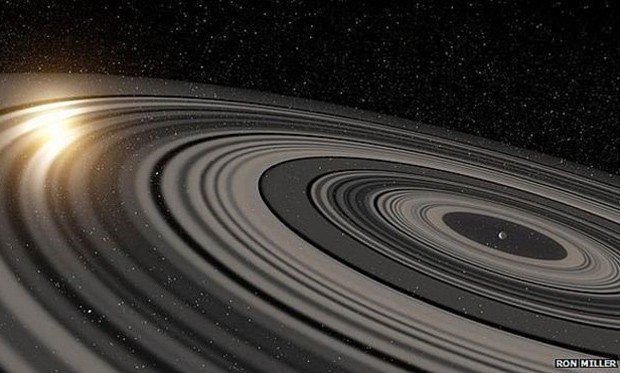
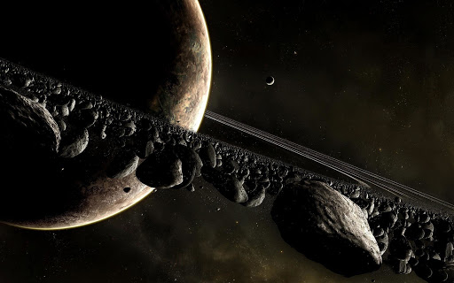
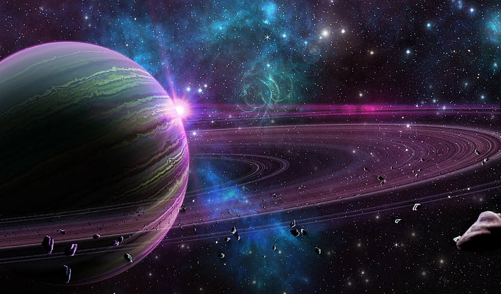
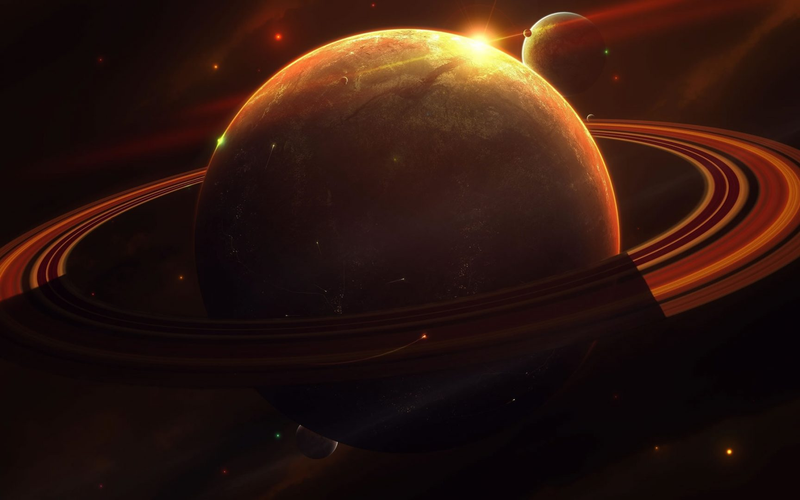

curiosidades sobre os planetas dos anéis
Astrônomos holandeses e americanos afirmam ter descoberto um planeta
com um sistema de anéis gigantesco, 200 vezes maior do que os anéis
de Saturno. Segundo os pesquisadores, esta é a primeira estrutura deste
tipo detectada em volta de um planeta fora do Sistema Solar.
Os cientistas afirmam que o sistema provavelmente tem mais de 30 anéis,
cada um medindo dezenas de milhões de quilômetros de diâmetro.
Espaços detectados no sistema de anéis também sugerem que parte do
material em volta do planeta pode estar se unindo para formar luas
um fenômeno que pode ser observado nos anéis de Saturno.
Saturno é o planeta menos denso do Sistema Solar
Sobretudo, a densidade de saturno chega a ser em média 30%
menor que a da água. Inclusive, alguns físicos acreditam
que por conta da densidade de saturno ser tão baixa daria
até pra fazer o planeta boiar em uma piscina cheia d’água.
Porém, vale ressaltar que isso é só um exemplo sem comprovações.
O planeta tem um formato achatado

Sobretudo, por conta do planeta girar tão rápido em seu eixo,
ele acaba por assumir o formato de esferoide oblato. Aliás,
ele não possui uma superfície definida.
Porém, é constatado que ele tem uma aparência mais achatada
nos polos e é convexo na região do equador.
Inclusive, o raio do equador e dos polos tem diferença de quase 10%.
Enquanto a distância do centro para os polos é de 54 mil quilômetros.
E já entre o centro e o equador ela chega a mais de 60 mil quilômetros.
Ou seja, a região equatorial é mais distante do centro do que os polos do planeta.
Saturno tem 62 luas

Primeiramente, vale destacar que o primeiro que possui mais luas é o planeta Júpiter,
o qual contém 67 luas. Porém, o planeta saturno é o segundo que contém mais luas,
com 62 satélites naturais. Inclusive, alguns de seus satélites são bem grandes,
como o Titã e já outras são bem pequenas, com poucos quilômetros de diâmetro.
Sobretudo, o Titã é a segunda maior lua do Sistema Solar.